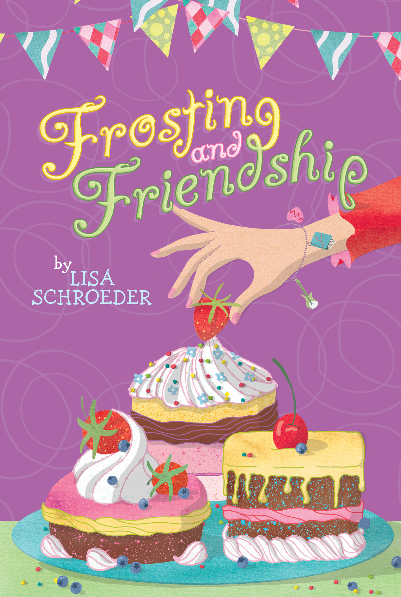
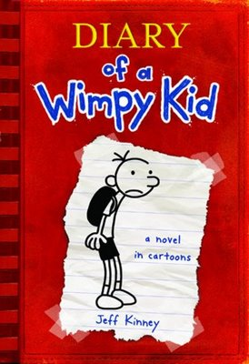
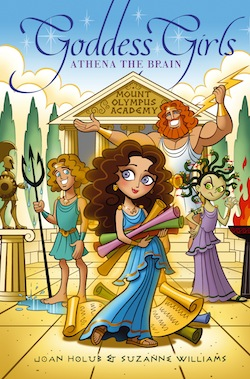

My favorite books
Home
Home
Home
Home
Home
Frosting and Friendship
Diary of a wimpy kid:whole series
Goddess Girls:whole series
Frosting and Friendship:

Lily is super bad at baking, but she agrees to join a bookclub called the Baking Bookworms. Sophie,the creater of the club is turning 13 soon. Isabel, Sophie's best friend decides to make a surprise birthday party for Sophie. But Lily's task is to make a amazing dessert for everyone in the party. But Lily is good at something: her band. While she needs to work on her band, she has baking in the way. What will happen? Read the book to find out the answer!
Diary of a wimpy kid:

Greg,as a middle school kid, has many problems throughout school. For example,his older brother Rodrick. Greg's best friend is named Rowley, whose also a real problem in middle school. What will happen to Greg? Read the book tofind out the answer!
Goddess Girls

Athena gets a invataition to study at MOA(Mount Olympics Academy). But Athena worries that if she leaves, she would miss her best friend on Earth. But Athena does make some new friends that make her feel better. What happens in the other books? Read to find out the answer!